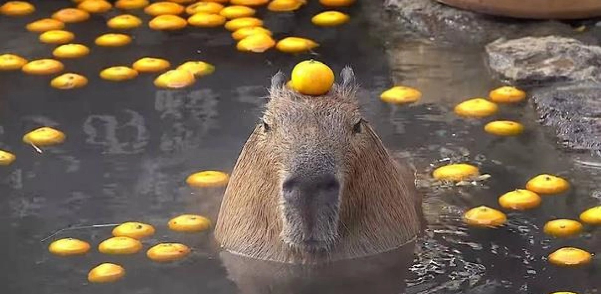
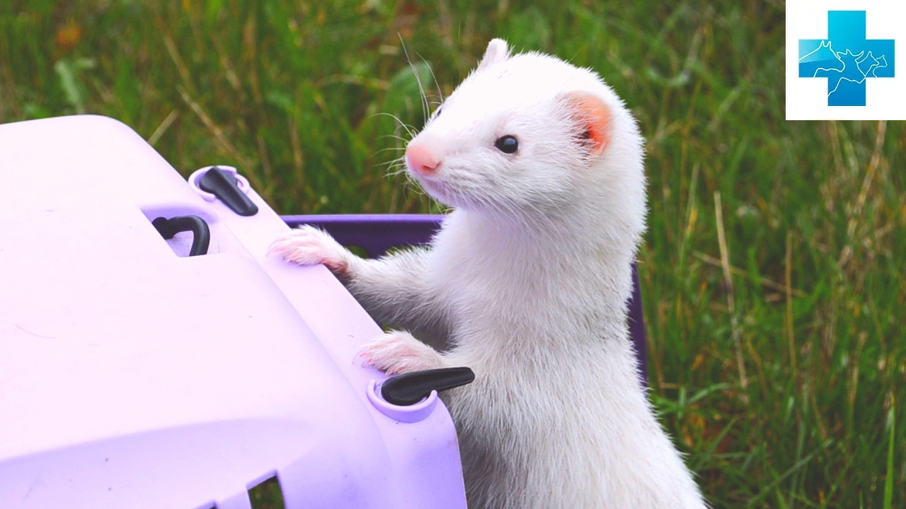
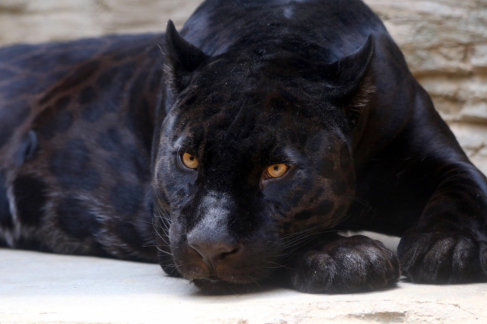

Дружелюбные животные
Капиба́ра, или водосви́нка (лат. Hydrochoerus hydrochaeris), — полуводное травоядное млекопитающее из подсемейства водосвинковых (Hydrochoerinae), один из двух (наряду с малой водосвинкой) ныне существующих видов рода водосвинки. Капибара — самый крупный среди современных грызунов.

Ла́ски и хорьки (лат. Mustela) — род млекопитающих семейства куньих. Кроме собственно хорьков, к этому же роду хищников относятся европейская норка, ласка, горностай и длиннохвостая ласка.
Три вида, в Евразии и Северной Америке; в России два вида: лесной или тёмный хорь (лат. Mustela putorius) и степной или светлый, хорь (лат. Mustela eversmanii). Длина тела у самцов — до 50 см, у самок — до 40; длина хвоста — до 18 см. С древности одомашнена альбиносная форма темного хоря — фуро. Выведен 2000 лет назад в Южной Европе и долгое время заменял кошку, использовался также для охоты на кроликов. Отличается спокойным неагрессивным нравом.

Хищники
Чёрные панте́ры — тёмноокрашенные особи из рода пантер, представляющих собой генетический вариант окраски — проявление меланизма. Чёрная пантера не является самостоятельным видом, это леопард (азиатский, африканский) или ягуар, но не чёрный тигр, который так и называется.
Также «пантера» — название рода животных в семействе кошачьих, представители которого (лев, тигр, леопард, ягуар, ирбис) в большинстве своём имеют рыжий или бежевый, а не чёрный, окрас с пятнами или полосами.

Леопа́рд, или барс, или пантера (лат. Panthera pardus) — вид хищных млекопитающих семейства кошачьих, один из пяти представителей рода пантера (лат. Panthera), относящегося к подсемейству больших кошек.
В XX веке был внесён в Красную книгу МСОП, в Красную книгу России, а также в охранные документы других стран. Однако во многих странах Африки относительно высокая численность леопардов позволяет выделять ежегодно квоту на их добычу.